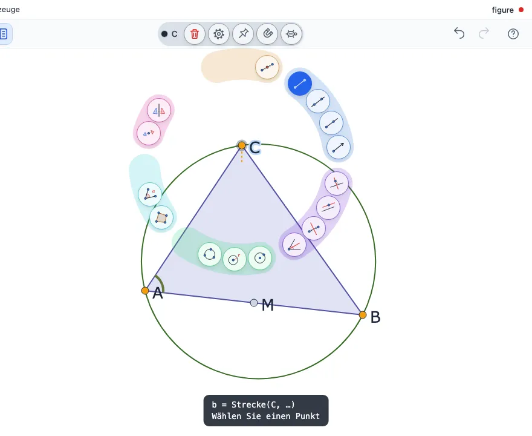

Mit Gesten konstruieren
Die Figur antippen
| Angetippte Stelle | Ergebnis |
|---|---|
| eine leere Stelle | freier Punkt (in 3D auf dem Boden z = 0) |
| nahe einem Schnitt | Schnittpunkt der beiden Objekte, die beim Überfahren aufleuchten (unter 24 px) |
| ein Objekt | Auswahl und Ring seiner Werkzeuge |
| eine leere Stelle, Ring geöffnet | der Ring schließt sich, ohne Punkt |
| leere Stelle oder Schnitt, Palette geöffnet | nichts, außer mit dem Werkzeug Punkt |
| ein Objekt, Palette geöffnet | Auswahl ohne Ring: Die Palette zeigt seine Werkzeuge |
Ein Text, ein Ausdruck oder ein Schieberegler wird nur ausgewählt: Sie haben keinen Ring.
Eine Gerade, eine Strecke, ein Vektor, ein Kreis, ein Bogen, ein Kegelschnitt oder ein Vieleck, das nur von freien Punkten abhängt, wird beim Ziehen als Ganzes verschoben: Diese Punkte werden gemeinsam verschoben.
Der Werkzeugring

Der Ring zeigt nur die Werkzeuge, die auf das angetippte Objekt anwendbar sind. Jedes Werkzeug hat immer denselben Platz; ein nicht anwendbares Werkzeug lässt seinen Platz leer. Familien, im Uhrzeigersinn von oben:
| Familie | Werkzeuge |
|---|---|
| Punkte | Punkt auf Objekt, Schnittpunkt, Mittelpunkt einer Strecke oder eines Kreises |
| Geraden | Strecke, Gerade, Strahl, Vektor |
| Konstruktionen | Senkrechte, Parallele, Mittelsenkrechte, Winkelhalbierende |
| Kreise | Mittelpunkt und Punkt, Mittelpunkt und Radius, drei Punkte, Kugel (3D) |
| Vielecke, Winkel, Ortslinien | Vieleck, Winkel, Ortslinie |
| Abbildungen | Punkt- und Achsenspiegelung, eines Punktes oder eines Objekts (Vieleck, Kreis…) |
Das Überfahren eines Werkzeugs zeigt im Hinweis die Zeile, die
es schreiben wird, und das erwartete Argument:
b = Strecke(C, …), „Wählen Sie einen Punkt“. Die
Aktionen für das Objekt selbst (Löschen, Einstellungen…)
befinden sich im
Kontextbereich
der Leiste.
Die Argumente wählen
Ist das Werkzeug gewählt, folgt eine Vorschau des Objekts dem Zeiger, und die zulässigen Objekte leuchten beim Überfahren auf. Wo ein Punkt erwartet wird, wählt man wahlweise einen vorhandenen Punkt, ein Objekt (ein Punkt auf Objekt entsteht), einen Schnitt (ein Schnittpunkt entsteht) oder eine leere Stelle (ein freier Punkt entsteht).
- Vieleck: die Ecken, dann noch einmal die erste. Ein Vieleck, dessen Ecken freie Punkte sind, wird beim Ziehen als Ganzes verschoben, außer es ist fixiert (Objekt fixiert in den Eigenschaften).
- Kreis (Mittelpunkt und Radius): im Ring das Symbol gedrückt halten und die Maus oder den Finger bewegen, um den Radius einzustellen; zum Erzeugen loslassen. Danach ändert Ziehen des Kreises seinen Radius.
- Ortslinie: angeboten bei einem Punkt oder einer Geraden, die von einem Punkt auf Objekt abhängen; mit einem Klick erzeugt. Bei einer Geraden zeichnet sie deren Einhüllende, die Kurve, die ihre Lagen berührt.
- Winkel und Winkelhalbierende: ein Punkt des ersten Schenkels, der Scheitel, ein Punkt des zweiten Schenkels.
Sonderfälle
- Übereinanderliegende Objekte: Ein Menü zeigt die Zeile jedes Objekts; beim Überfahren leuchtet das Objekt auf. Ein Punkt hat immer Vorrang, und ein Schnitt liefert direkt den Schnittpunkt.
- Mit dem Finger: Während eines Werkzeugs zeigt der aufgelegte Finger die Vorschau, ohne etwas zu verschieben, und wählt beim Anheben. Man kann auf das Symbol drücken und in einer einzigen Geste bis zum Ziel gleiten.
- Fensterrand: Der Ring verschiebt sich, um ganz sichtbar zu sein, und ist mit dem Objekt durch eine gepunktete Linie verbunden; er folgt dem Objekt, wenn sich die Figur bewegt.
- Abbrechen: Esc oder ✕ des Hinweises.
- Verschieben: Während eines Werkzeugs zielt das Ziehen; die rechte Maustaste verschiebt immer Objekte und Ansicht.
- Nachsehen: Ein Rechtsklick zeigt die Eigenschaften des Objekts, auf das er zeigt, ohne das Werkzeug abzulegen oder als Argument zu zählen.